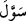
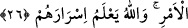

25. Kendilerine doğru yol belli olduktan sonra arkalarına (yine eski küfürlerine)
dönenlere, şeytan hatâlarını süslemiş ve (günâh işlemelerini) kolaylaştırmış ve
onları uzun emellere, umutlara düşürmüştür.
“Kendilerine” münafıklara “doğru yol belli olduktan sonra arkalarına (yine eski
küfürlerine) dönenlere,” -ki bunlar kalplerinin hasta oluşuyla, diğer bir takım çirkin
işler ve hallerle nitelenmiş ve Peygamberimiz (s.a.)’i inkâr etmişlerdir- “şeytan
hatâlarını süslemiş ve (günâh işlemelerini) kolaylaştırmış ve onları uzun emellere,
ümidlere düşürmüştür.” Açık deliller ve müthiş mûcizelerle Allah da onlara mühlet
vermiş ve onları peşin olarak cezalandırmamıştır.
İrtidad ve riddet, kişinin geldiği yoldan geri dönmesidir. Fakat riddet, küfre mahsus
bir kullanımdır. İrtidat ise dinde ve başka şeylerde de kullanılır.
(edbâr) kelimesi
dübür kelimesinin çoğuludur. Bir şeyin arkası önün hılâfıdır. Kubül ve dübür
kelimeleri, malum organlar için kinâye olarak kullanılmışlardır.
(sevvele) kelimesi
sevl kökünden gelmekte olup “salıvermek, serbest bırakmak, ertelemek” mânalarına
gelmektedir. Yâni “şeytan onların belâ, musîbet ve mâsiyetlere dalmalarını
kolaylaştırmıştır” demektir.
Râğıb, sevl için “canın çektiği bir hacettir” demiştir. Tesvil ise nefsin arzu ettiği şeyi
süsleyip çirkini güzel göstermesidir. İmlâ ise imdad demektir. Bu mânâda uzun bir
zamana melâve ve melve denir.
26. Bu böyledir. Çünkü onlar, Allah’ın indirdiğinden hoşlanmayanlara: “Bazı
hususlarda size itâat edeceğiz” dediler. Oysa Allah, onların gizlediklerini biliyor.
“Bu” dinden dönmek “böyledir. Çünkü onlar” münafıklar, “Allah’ın indirdiğinden
hoşlanmayanlara”
gizlice
Yahudilere,
-ki
bunlar
Peygamberimiz
(s.a.)’i
çekemediklerinden ve Kur’ân’ın kendilerine inmesini beklediklerinden dolayı
Kur’ân’ın Allah’tan olduğunu bildikleri halde onun Peygamberimiz (s.a.)’e inmesinden
hoşlanmamışlardır- “Bazı hususlarda size itâat edeceğiz” dediler.” Bu, âyet-i
kerimede “İki yüzlülük edenleri görmedin mi? Kitap ehlinden inkâr eden
kardeşlerine eğer siz (yurdunuzdan) çıkarılırsanız mutlaka biz de sizinle beraber
çıkarız. Sizin aleyhinize hiç kimseye itâat etmeyiz, şâyet sizinle savaşılırsa mutlaka
size yardım ederiz, derler” (Haşr 59/11) şeklinde ifâde edilen husustur. “Oysa Allah,
onların” -bunlar Kurayza oğulları ve Nadr oğulları Yahudileridir ki münafıkların
bunlarla dostluk ve muhabbetleri vardı- “gizlediklerini” ve gizlice Yahudilere